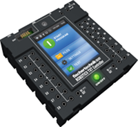

FTScratchTXT enables use of the fischertechnik
ROBOTICS TXT Controller
on PCS or notebooks together with the easy-to-learn programming language
Scratch.
This allows little applications for the control of motors and lamps using switches,
light barriers and lots of other sensors to be created in a flash. The large number
of options offered by the programming language, Scratch, means that much larger programs can be created.
New Scratch upgrades, such as FTScratch, use the developer version
ScratchX.
Block description

This incident is activated as soon as a switch / reed contact / light barrier is pressed / closed on universal input I1-I8 (or released / opened).
This incident is activated as soon as the number of pulses on counter input C1-C4 is higher / lower than an entered value or a value resulting in combination with blocks from the category "Operators".

This incident is activated as soon as the value of the colour sensor / ultrasound distance sensor / NTC resistance / photo resistance on universal input I1-I8 is higher / lower than an entered value or a value resulting in combination with blocks from the category "Operators".
This block can be used to request the current value of counter input C1-C4 and for calculations or conditions in combination with blocks from the categories "Control", "Operators" and "Incidents". The return value is a 16-Bit value.
This block can be used to request the current value of the colour sensor / ultrasound distance sensor / NTC resistance / photo resistance on universal input I1-I8 and for calculations or conditions in combination with blocks from the categories "Control", "Operators" and "Incidents". The return value is a 16-Bit value.

This block is used to request whether a switch / reed contact / light barrier on universal input I1-I8 is pressed / closed (or released / opened). It can be used for calculations or conditions in combination with blocks from the categories "Control", "Operators" and "Incidents". The return is a Boolean value.
Playing the installed sound files 1 - 29 can be started using this block.
Playing the installed sound files 1 - 29 can be started using this block. It waits until playing finishes before performing further commands.

Output O1 - O8 can be set, e.g. for a lamp, to a value of 0...8 using this block. Values lower than 0 or higher than 8 are cut off at 0 or 8.

Output O1 - O8 can be set to a value of 0...8 using this block. Values lower than 0 or higher than 8 are cut off at 0 or 8.
The current value of counter input C1 - C4 can be reset using this block.

Output M1 - M4 can be set, e.g. for a motor, to a value of 0...8 using this block. Values lower than 0 or higher than 8 are cut off at 0 or 8.
Output M1 - M4 can be set to forward (backward), e.g. for a motor, with a value of 0...8 using this block. Values lower than 0 or higher than 8 are cut off at 0 or 8.

Output M1 - M4 can be changed, e.g. for a motor, to forward (backward) using this block.

A motor on output M1 - M4 can be stopped using this block.
Output M1 - M4 can be set, e.g. for a motor, for a set number of steps and a speed of 1...8, to forward / backward using this block. Output M1 - M4 can only be started again after running the "Stop motor" block.
Two of the outputs M1 - M4 can be set, e.g. for a motor, synchronised with a speed of 1...8, to forward / backward using this block. Outputs M1 - M4 can only be individually started again after running the "Stop motor" block.

This block is a combination of the two previous blocks.
A motor on output M1 - M4 can be stopped using this block.

Universal input I1 - I8 can be changed from digital to analog using this block.

This block resets the ROBO TXT. All outputs are set to 0.